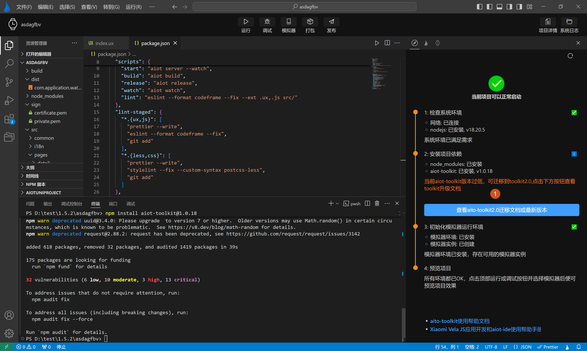
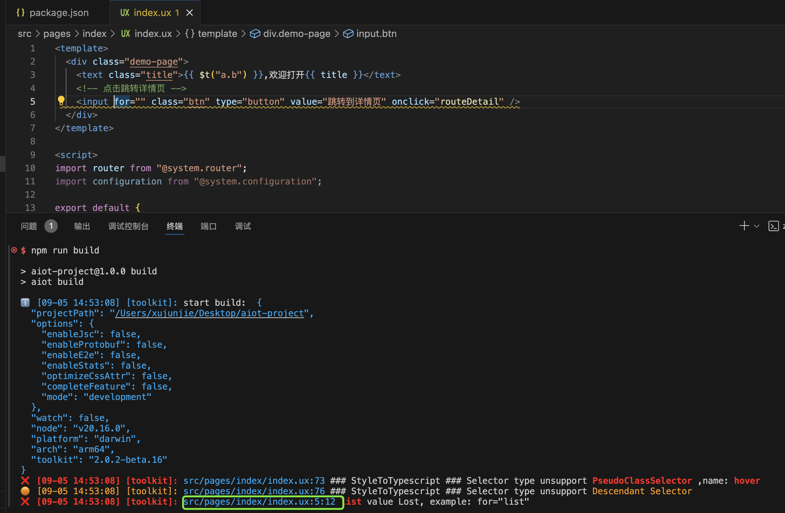

# AIoT-toolkit
开发者在开发Xiaomi Vela JS 应用项目时，AIoT-IDE主要通过项目模板中内置的AIoT-toolkit完成项目的编译构建任务，得到构建文件（以 rpk 后缀命名，如：com.application.demo.rpk）。
# 功能支持
AIoT-toolkit是将源码项目转换为目标代码项目并生成目标代码应用的命令行工具，同时配备了 模拟器 相关功能供开发者使用。AIoT-toolkit提供了脱离AIoT-IDE，独立开发Xiaomi Vela JS 应用的能力。在不使用AIoT-IDE的情况下，可以完全通过AIoT-toolkit使用命令行工具进行开发，目前最新的AIoT-toolkit2.0有以下常用命令：
- 创建项目：npm create aiot
- 直接运行：aiot start，第一次运行会提示创建的模拟器，根据提示操作即可
- 构建项目，生成rpk： aiot build
- 构建项目-release模式：aiot release
- 获取已连接设备列表: aiot getConnectedDevices
- 获取设置平台：aiot getPlatforms
- 创建
Xiaomi Vela JS模拟器：aiot crateVelaAvd - 删除
Xiaomi Vela JS模拟器：aiot deleteVelafangAvd
# 版本支持
目前AIoT-IDE支持AIoT-toolkit1.0，和AIoT-toolkit2.0，对AIoT-toolkit1.0的支持最小版本为1.0.18，对AIoT-toolkit2.0的支持最小版本为2.0.x。当前最新的AIoT-IDE1.6.0版本，推荐使用2.0，2.0提供了更快的编译速度和热更新支持，将给开发者提供更好的开发体验。
AIoT-IDE在打开一个Xiaomi Vela JS应用时，会主动检测AIoT-toolkit版本，当前项目使用的是AIoT-toolkit1.0时会提示你可以升级并查看迁移文档，如下图标签1所示：

如果你项目中使用了AIoT-toolkit2.0，但不是当前AIoT-IDE支持的最小正式版本，则会强制提示你升级。如下图标签1所示：

# 功能优化
对比AIoT-toolkit1.0，AIoT-toolkit2.0有以下重大改进：
1.模板语法中可以直接写复杂函数
<div
id="{{(x=> x+ y)(1)}}"
onclick="(evt)=>{
const x = 10;
return sum(x, evt, y)
}">
</div>
2.class的变量可以包含多个类名(之前每个变量只能包含1个类名)
class="a {{x}}" // x="a1 a2 a3"
3.style可以是string，也可以是object(之前只是object)
<div style="a{{b}}c">
</div>
4.样式顺序可以随意写(之前必须按固定顺序)
border: solid red 10px;
5.错误提示定位到行列 